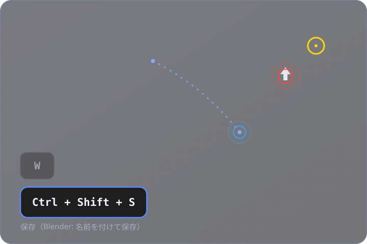

押しているキーをリアルタイム表示
今押しているキーを画面へすぐに表示します。離すと設定した時間でふわっとフェードアウトします。
キー入力オーバーレイ表示アプリ
Unity/Blenderなどの操作解説・実況動画を撮るときに、今押しているキーを画面に常時表示するオーバーレイアプリです。マウスカーソルの位置やクリック、ドラッグの軌跡もあわせて表示できます。

グローバルなキーボード／マウスフックで、Unity/Blenderにフォーカスがあっても動作します。録画・配信に映してよいものだけを、見やすく表示します。
今押しているキーを画面へすぐに表示します。離すと設定した時間でふわっとフェードアウトします。
Ctrl + Shift + Sのような組み合わせを、1つのキーキャップにまとめて表示します。
アクティブなアプリがBlender/Unityのときだけ、押したキーがそのアプリで何のショートカットかを簡単な説明とあわせて表示します（ON/OFF可能）。
Blender/Unity以外のアプリを操作している間は、既定でキー入力の表示自体をオフにします。録画中にチャットやパスワード欄に切り替えたキー入力の映り込みを防ぐ安全機能です（設定でOFFにもできます）。
マウスカーソルの位置を常時リング状に表示できます。今どこを見て操作しているかが伝わりやすくなります。
クリックした瞬間、その場所に波紋（リップル）エフェクトを表示します。右クリックは左/中クリックと別の色にできるので、「実行」か「メニューを開いた」かを動画上で見分けやすくなります。
マウスホイールを回すと、カーソル位置に上下の矢印が一瞬表示されて消えます。
ボタンを押しながらのドラッグ操作は、その軌跡を線で表示し、離すとフェードアウトします。視点回転やシーンビュー操作など「ドラッグしている」こと自体を伝えたい場面向けです。
下にあるUnity/Blenderの操作をオーバーレイが妨げません（設定でOFFにも切り替えられます）。
表示位置（画面の四隅）、余白、文字サイズ、表示保持時間、同時表示数、背景色・文字色・アクセント色などを、設定画面からその場で変更できます。
Ctrl+Alt+Pで、キー表示・カーソルハイライト・クリック波紋をまとめて一時停止できます。一時停止中は「一時停止中」バッジを常に表示するので、消し忘れによる録画事故を防げます。
Tauri製の軽量なオーバーレイアプリです。Windows・macOSどちらでも利用できます。
インストールすれば、あとは普段どおりUnity/Blenderを操作するだけです。
インストール後に起動すると、タスクトレイ（macOSではメニューバー）にアイコンが常駐します。
押しているキーが自動で画面に表示されます。マウスカーソルのハイライトやクリックの波紋も、設定でONにしていればそのまま表示されます。
「設定を開く...」から、表示位置・色・時間などを好みに調整できます。設定はリアルタイムに反映されます。
トレイメニューおよび設定ウィンドウから、以下をリアルタイムに変更できます。各グループをクリックすると展開します。
| 設定項目 | 説明 | 初期値 |
|---|---|---|
| 表示位置 | キーキャップを表示する画面の角（四隅から選択） | 左下 |
| 余白（横/縦） | 画面端からの余白 | 40px / 60px |
| 文字サイズ | キーキャップの文字サイズ | 22px |
| 設定項目 | 説明 | 初期値 |
|---|---|---|
| 背景色 | キーキャップの背景色 | #1e1e1e |
| 背景の不透明度 | キーキャップ背景の不透明度 | 0.9 |
| 文字色 | キーキャップの文字色 | #ffffff |
| アクセント色 | 押下中のキーキャップの枠線の色 | #5a8cff |
| 設定項目 | 説明 | 初期値 |
|---|---|---|
| 表示保持時間 | キーを離してからフェードアウトするまでの時間 | 700ms |
| 同時表示数 | 同時に表示する最大キー数（超えると古いものから消えます） | 8 |
| 設定項目 | 説明 | 初期値 |
|---|---|---|
| クリック透過 | オーバーレイをクリック透過にするか（Unity/Blender操作の邪魔をしない） | ON |
| オーバーレイ表示 | オーバーレイ自体の表示/非表示 | ON |
| ショートカット説明表示 | Blender/Unityのショートカット説明表示のON/OFF（共通） | ON |
| 対象アプリ外で非表示 | Blender/Unity以外のアプリではキー入力自体を表示しない安全機能 | ON |
| 設定項目 | 説明 | 初期値 |
|---|---|---|
| カーソルハイライト | マウスカーソルの位置を常時リング状にハイライトするか | ON |
| カーソルハイライト色 | カーソルのリング表示の色 | #ffd60a |
| クリック波紋エフェクト | クリック時の波紋表示のON/OFF。同じ設定でホイールのスクロール表示・ドラッグ軌跡表示もまとめてON/OFFします | ON |
| クリック波紋色（左/中） | 左クリック・中クリック時の波紋の色 | #ff453a |
| クリック波紋色（右） | 右クリック時の波紋の色。左/中クリックと別色にして見分けやすくできます | #3aa5ff |
一時停止ホットキー（Ctrl+Alt+P）は現状固定で、設定からの変更はできません。設定はconfig.json（Windows: %APPDATA%\com.nunifuchisaka.keydisplay\config.json / macOS: ~/Library/Application Support/com.nunifuchisaka.keydisplay/config.json）に保存されます。
導入前に確認してください。
現在はメインディスプレイ（プライマリモニター）のみに表示されます。複数モニター環境で、サブモニター側にキー表示やカーソルハイライトを出すことはできません。
一時停止のホットキー（Ctrl+Alt+P）は現在固定です。他のアプリのショートカットと被る場合は、トレイメニューの「一時停止」から手動で切り替えてください。
グローバルなキーボード監視には「アクセシビリティ」の許可が必要です。Blender/Unityの判定（ショートカット説明の出し分け）には、別途「画面収録」の許可が必要になる場合があります。
グローバルなキーボード監視の仕組み上、ごくまれにキーを離した通知を取りこぼし、キーが押しっぱなしの表示のまま残ることがあります。その場合はトレイメニューの「表示をクリア」で即座にリセットできます。
利用環境によって挙動が変わる場合があります。特にmacOS環境（特にRetinaディスプレイでのカーソル位置合わせ）やマウスホイールの上下判定、一時停止ホットキーの動作は、実機での検証が十分でない部分が残っています。録画で使う前に、まずご自身の環境で短時間の動作確認をおすすめします。